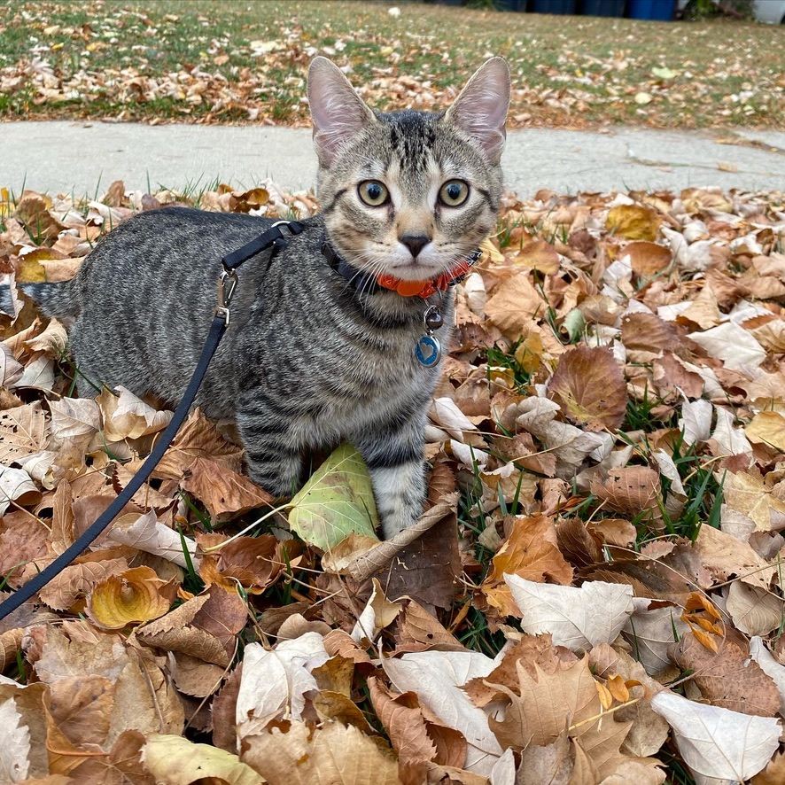
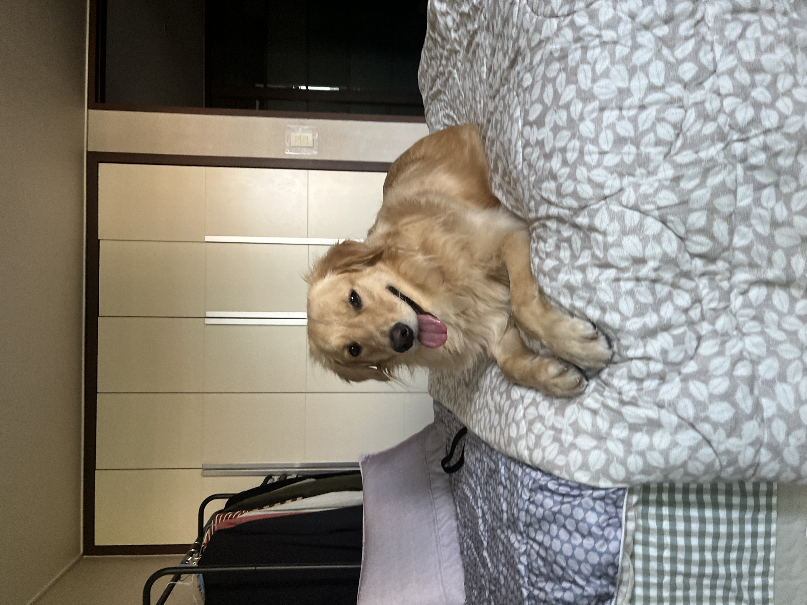
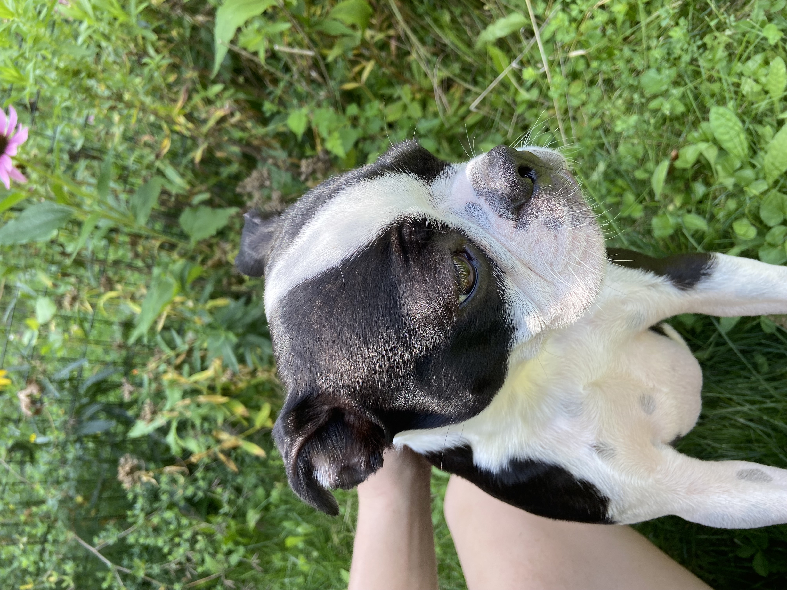
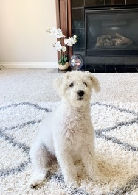

Pet Page
Pluto

Pluto is a five year old rescue dog of an unknown breed. He was found wandering alone and taken to the Valley Humane Society where he found his new family. From a young age, Pluto always had a special personality, he was known for being very very lazy! He spends most of his time staring out the window to keep watch of his house. Don’t let the laziness fool you because Pluto defends his family from the mailman and squirrels every single day.
Aside from his job as defender of the house, Pluto likes to have fun. Pluto’s favorite part of the day is his daily walk. Sometimes he even gets to go to the park and meet his neighbors. He also loves his toy duck, and only his toy duck. As a dog, it's in his nature to hunt and so he makes sure to get some practice with his toy duck.
Photo Gallery


Likes
- Eating his bones
- Going to the beach
- His toy duck
Van Gogh
Van Gogh is a three year old cat of mixed ragdoll and domestic shorthair breed. He was adopted when he was 7 months old. Van Gogh has been a people cat since he was young. He craves attention but needs alone time when he wants it. He is purely a masterpiece when his sapphire eyes staring at his human friends. He loves birds, rats, insects, and water from human mug..
Van Gogh is responsible for his household safety. But he gets scared when the vacuum machine wakes up. He tries his best to make defense but his beautiful fur coat gets messed up immediately when he gets too close. By the way, he likes his fur coat being brushed by himself. He bites when he does not get enough attention, but he always gets what he wants.
Photo Gallery
Likes
- Going outside
- Sitting on the sofa
- Staring at the window
Sage
Sage is a 3 year old Golden Retriever. She is one of the laziest dogs. She loves sneaking into the bedroom and hopping onto the neatest bed. She also loves riding in a car with the windows open feeling the wind and air. She enjoys walking, only if you take her for a ride to a big arboretum or park. Walking around the neighborhood is not necessarily her cup of tea.
Her favorite food is corn. One day, she stole corn on the cob from the dining table, which was surprising because she is normally gentle and polite. She took the stolen corn to the patio and enjoyed her meal by herself. Unfortunately, the corn turned out to be unripe, so she ended up vomiting it all later.
Photo Gallery
Likes
- Eating Carrot
- Nap
- Big park
Maui
Maui is a energetic black dog that frequently steals shoes to prevent people from leaving.
YHe loves jumping on people and doesn't care for exercise all that much. He loves his family and will lick your face.
Photo Gallery
Likes
- Hide and Seek
- Knocking things off the mantle
- Being pet
Milo
Milo is a high maintenance, lazy dog who prefers lounging over running.
His favorite food to eat is Indian food, and he loves anything with chicken in it. He especially loves chicken, but it must be marinated and seasoned.
Photo Gallery
Likes
- Chicken (from biryani)
- Sleeping
- Eating